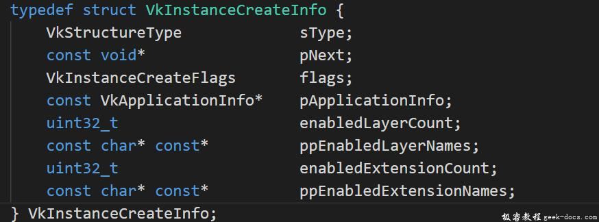

创建Vulkan实例，与Vulkan打交道，通常的步骤是创建一个intance去初始化Vulkan library。这个instance是您的应用程序与Vulkan库之间的连接桥梁,通常创建过程中，需要向驱动程序提供一些应用层的信息。
创建一个实例
Vulkan API使用vkInstance对象来存储所有每个应用的状态。应用程序必须在执行任何其他Vulkan操作之前创建一个Vulkan实例，基本的Vulkan架构看起来是这样的：
请注意，图中有一些层（Layer)，这些层也被加载器加载。层通常用于验证，通常是由驱动执行的错误检查。在Vulkan中，驱动程序比OpenGL等其他API要轻量得多，部分原因是它将功能验证委托给验证层。层是可选的，每次应用程序创建一个实例时都可以选择性地装载。
Vulkan Layer超出了本章的范围，下面开始创建vulkan实例，首先添加一个createInstance函数，并在initVulkan函数中调用。
void initVulkan() {
createInstance();
}
另外添加一个类成员来保存instance句柄:
private:
VkInstance instance;
现在我们创建一个instance，并且为该数据结构赋予自定义应用程序的信息。这些数据从技术角度是可选择的，但是它可以为驱动程序提供一些有用的信息来优化程序特殊的使用情景，比如驱动程序使用一些图形引擎的特殊行为。这个数据结构称为VkApplicationInfo:
VkApplicationInfo appInfo = {};
appInfo.sType = VK_STRUCTURE_TYPE_APPLICATION_INFO;appInfo.pNext = nullptr;
appInfo.pApplicationName = "Hello Triangle";
appInfo.applicationVersion = VK_MAKE_VERSION(1, 0, 0);
appInfo.pEngineName = "No Engine";
appInfo.engineVersion = VK_MAKE_VERSION(1, 0, 0);
appInfo.apiVersion = VK_API_VERSION_1_0;
如前所述，Vulkan中的许多数据结构要求在sType成员中明确的指定类型。pNext成员可用于指向特定的扩展结构。我们在这里使用默认初始化，将其设置为nullptr。
Vulkan中的大量信息通过结构体而不是函数参数传递，我们将填充一个结构体以提供足够的信息创建instance。下一个结构体不是可选的，它需要告知Vulkan驱动程序我们需要使用哪些全局的 extensions 和 validation layers。这里的全局意味着它适用于整个程序，而不是特定的设备，这些内容将在接下来的小节中说明。
VkInstanceCreateInfo结构体信息如下：

VkInstanceCreateInfo createInfo = {};
createInfo.sType = VK_STRUCTURE_TYPE_INSTANCE_CREATE_INFO;
createInfo.pApplicationInfo = &appInfo;
前几个参数比较简单。接下来的两个指定需要的全局扩展，Vulakn对于平台特性是零API支持的(至少暂时这样)，这意味着需要一个扩展才能与不同平台的窗体系统进行交互。GLFW有一个方便的内置函数，返回它有关的扩展信息，我们可以传递给struct:
unsigned int glfwExtensionCount = 0;
const char** glfwExtensions;glfwExtensions = glfwGetRequiredInstanceExtensions(&glfwExtensionCount);createInfo.enabledExtensionCount = glfwExtensionCount;
createInfo.ppEnabledExtensionNames = glfwExtensions;
结构体的最后两个成员确定需要开启的全局的validation layers。我们将会在下一节中深入探讨这部分内容，在这一节设置为空。
createInfo.enabledLayerCount = 0;
我们现在已经指定了Vulkan创建一个实例需要的一切信息，调用vkCreateInstance创建属于我们的第一个instance:
VkResult result = vkCreateInstance(&createInfo, nullptr, &instance);
如你所见，Vulkan中创建、实例化相关的函数参数一般遵循如下原则定义:
- 使用有关creation info 的结构体指针
- 使用自定义分配器回调的指针
- 使用保存新对象句柄的指针
如果一切顺利，此刻instance的句柄应该存储在VkInstance类成员中了。几乎所有的Vulkan函数都返回一个值为VK_SUCCESS或错误代码的VkResult类型的值。要检查instance是否已经成功创建，我们不需要保存结果，仅仅使用 VK_SUCCESS 值来检测即可：
if (vkCreateInstance(&createInfo, nullptr, &instance) != VK_SUCCESS) {
throw std::runtime_error("failed to create instance!");
}
现在运行程序，确认我们的instance创建成功。
检查可选功能
如果你查看vkCreateInstance的文档，你会看到一个可能出现的错误代码是VK_ERROR_EXTENSION_NOT_PRESENT。我们可以简单地指定我们需要的扩展，如果该错误代码返回，则终止它们。这对于窗体系统或者诸如此类的扩展是有意义的，那么如何检查可选功能呢？
在创建instance之前检索支持的扩展列表，通过vkEnumerateInstanceExtensionProperties函数。它指向一个变量，该变量存储扩展数量和一个VkExtensionProperties数组来存储扩展的详细信息。它也接受一个可选择的参数，允许我们通过特定的validation layers过滤扩展，现在我们暂时忽略这些。
要分配一个数组来保存扩展的详细信息，我们首先需要知道有多少个扩展存在。可以通过将后一个参数置空来获取扩展数量:
uint32_t extensionCount = 0;
vkEnumerateInstanceExtensionProperties(nullptr, &extensionCount, nullptr);
现在我们分配一个集合去持有扩展的详细信息(include
std::vector<VkExtensionProperties> extensions(extensionCount);
最后我们可以遍历扩展的详细信息:
vkEnumerateInstanceExtensionProperties(nullptr, &extensionCount, extensions.data());
每个VkExtensionProperties结构体包含扩展的名称和版本。我们可以用简单的for循环打印他们(\t是缩进)
std::cout << "available extensions:" << std::endl;for (const auto& extension : extensions) {
std::cout << "\t" << extension.extensionName << std::endl;
}
如果需要获取有关Vulkan支持的一些详细信息，可以将此代码添加到createInstance函数。作为一个尝试，创建一个函数，检查glfwGetRequiredInstanceExtensions返回的所有扩展是否都包含在受支持的扩展列表中。
退出
在程序退出前，请正确销毁VkInstance。这部分可以定义在cleanup函数中，调用vkDestroyInstance函数完成。
void cleanup() {
vkDestroyInstance(instance, nullptr); glfwDestroyWindow(window); glfwTerminate();
}
vkDestroyInstance函数的参数很简单。像之前小节提到的，Vulkan中的分配和释放功能有一个可选的分配器回调，我们通过将nullptr设置忽略。后续小节中创建的所有Vulkan相关资源，集中在cleanup函数中进行清理，且确保在销毁instance之前销毁。
在进行更复杂的内容之前，是时候了解validation layers了。
源代码
// 01_instance_creation.cpp
#define GLFW_INCLUDE_VULKAN
#include <GLFW/glfw3.h>#include <iostream>
#include <stdexcept>
#include <cstdlib>const int WIDTH = 800;
const int HEIGHT = 600;class HelloTriangleApplication {
public:
void run() {
initWindow();
initVulkan();
mainLoop();
cleanup();
}private:
GLFWwindow* window; VkInstance instance; void initWindow() {
glfwInit(); glfwWindowHint(GLFW_CLIENT_API, GLFW_NO_API);
glfwWindowHint(GLFW_RESIZABLE, GLFW_FALSE); window = glfwCreateWindow(WIDTH, HEIGHT, "Vulkan", nullptr, nullptr);
} void initVulkan() {
createInstance();
} void mainLoop() {
while (!glfwWindowShouldClose(window)) {
glfwPollEvents();
}
} void cleanup() {
vkDestroyInstance(instance, nullptr); glfwDestroyWindow(window); glfwTerminate();
} void createInstance() {
VkApplicationInfo appInfo = {};
appInfo.sType = VK_STRUCTURE_TYPE_APPLICATION_INFO;
appInfo.pApplicationName = "Hello Triangle";
appInfo.applicationVersion = VK_MAKE_VERSION(1, 0, 0);
appInfo.pEngineName = "No Engine";
appInfo.engineVersion = VK_MAKE_VERSION(1, 0, 0);
appInfo.apiVersion = VK_API_VERSION_1_0; VkInstanceCreateInfo createInfo = {};
createInfo.sType = VK_STRUCTURE_TYPE_INSTANCE_CREATE_INFO;
createInfo.pApplicationInfo = &appInfo; uint32_t glfwExtensionCount = 0;
const char** glfwExtensions;
glfwExtensions = glfwGetRequiredInstanceExtensions(&glfwExtensionCount); createInfo.enabledExtensionCount = glfwExtensionCount;
createInfo.ppEnabledExtensionNames = glfwExtensions; createInfo.enabledLayerCount = 0; if (vkCreateInstance(&createInfo, nullptr, &instance) != VK_SUCCESS) {
throw std::runtime_error("failed to create instance!");
}
}
};int main() {
HelloTriangleApplication app; try {
app.run();
} catch (const std::exception& e) {
std::cerr << e.what() << std::endl;
return EXIT_FAILURE;
} return EXIT_SUCCESS;
}